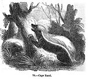
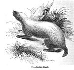

The honey badger (Mellivora capensis), also known as the ratel (/ˈreɪtəl/ or /ˈrɑːtəl/), is a species of mustelid native to Africa, Southwest Asia, and the Indian Subcontinent. Despite its name, the honey badger does not closely resemble other badger species; instead, it bears more anatomical similarities to weasels. It is classed as Least Concern by the IUCN owing to its extensive range and general environmental adaptations. It is primarily a carnivorous species and has few natural predators because of its thick skin and ferocious defensive abilities.
Etymology
Ratel is an Afrikaans word, possibly derived from the Middle Dutch word for rattle, honeycomb (either because of its cry or its taste for honey).
Taxonomy
The honey badger is the only species of the genus Mellivora. Although in the 1860s it was assigned to the badger subfamily, the Melinae, it is now generally agreed that it bears very few similarities to the Melinae. It is much more closely related to the marten subfamily, Mustelinae, but furthermore is assigned its own subfamily, Mellivorinae. Differences between Mellivorinae and Melinae include differences in their dentition formulae. Though not in the same subfamily as the wolverines, which are a genus of large-sized and atypical Mustelinae, the honey badger can be regarded as another, analogous, form of outsized weasel or polecat.
The species first appeared during the middle Pliocene in Asia. Its closest relation was the extinct genus Eomellivora, which is known from the upper Miocene, and evolved into several different species throughout the whole Pliocene in both the Old and New World.
Subspecies
As of 2005, 12 subspecies are recognised. Points taken into consideration in assigning different subspecies include size and the extent of whiteness or greyness on the back.
| Subspecies | Trinomial authority | Description | Range | Synonyms |
|---|---|---|---|---|
| Cape ratel Mellivora capensis capensis  |
Schreber, 1776 | South and southwestern Africa | mellivorus (G. [Baron] Cuvier, 1798) ratel (Sparrman, 1777) |
|
| Ethiopian ratel Mellivora capensis abyssinica |
Hollister, 1910 | Ethiopia | ||
| Turkmenian ratel Mellivora capensis buechneri |
Baryshnikov, 2000 | Similar to the subspecies indica and inaurita, but is distinguished by its larger size and narrower postorbital constriction | Turkmenistan | |
| Lake Chad ratel Mellivora capensis concisa |
Thomas and Wroughton, 1907 | The coat on the back consists largely of very long, pure white bristle-hairs amongst long, fine, black underfur. Its distinguishing feature is the fact that unlike other subspecies, it lacks the usual white bristle-hairs in the lumbar area | Sahel and Sudan zones, as far as Somaliland | brockmani (Wroughton and Cheesman, 1920) buchanani (Thomas, 1925) |
| Black ratel Mellivora capensis cottoni |
Lydekker, 1906 | The fur is typically entirely black, with thin and harsh hairs. | Ghana, northeastern Congo | sagulata (Hollister, 1910) |
| Nepalese ratel Mellivora capensis inaurita |
Hodgson, 1836 | Distinguished from indica by its longer, much woollier coat and having overgrown hair on its heels | Nepal and contiguous areas east of it | |
| Indian ratel Mellivora capensis indica  |
Kerr, 1792 | Distinguished from capensis by its smaller size, paler fur and having a less distinct lateral white band separating the upper white and lower black areas of the body | Western Middle Asia northward to the Ustyurt Plateau and eastward to Amu Darya. Outside the former Soviet Union, its range includes Afghanistan, Iran (except the southwestern part), western Pakistan and western India | mellivorus (Bennett, 1830) ratel (Horsfield, 1851) |
| White-backed ratel Mellivora capensis leuconota |
Sclater, 1867 | The entire upper side from the face to half-way along the tail is pure creamy white with little admixture of black hairs | West Africa, southern Morocco, former French Congo | |
| Kenyan ratel Mellivora capensis maxwelli |
Thomas, 1923 | Kenya | ||
| Arabian ratel Mellivora capensis pumilio |
Pocock, 1946 | Hadhramaut, southern Arabia | ||
| Speckled ratel Mellivora capensis signata |
Pocock, 1909 | Although its pelage is the normal dense white over the crown, this pale colour starts to thin out over the neck and shoulders, continuing to the rump where it fades into black. It possesses an extra lower molar on the left side of the jaw | Sierra Leone | |
| Persian ratel Mellivora capensis wilsoni |
Cheesman, 1920 | Southwestern Iran and Iraq |
Physical description
The honey badger has a fairly long body, but is distinctly thick-set and broad across the back. Its skin is remarkably loose, and allows it to turn and twist freely within it. The skin around the neck is 6 millimetres (0.24 in) thick, an adaptation to fighting conspecifics. The head is small and flat, with a short muzzle. The eyes are small, and the ears are little more than ridges on the skin, another possible adaptation to avoiding damage while fighting.
The honey badger has short and sturdy legs, with five toes on each foot. The feet are armed with very strong claws, which are short on the hind legs and remarkably long on the forelimbs. It is a partially plantigrade animal whose soles are thickly padded and naked up to the wrists. The tail is short and is covered in long hairs, save for below the base.
Honey badgers are the largest terrestrial mustelids in Africa. Adults measure 23 to 28 cm (9.1 to 11.0 in) in shoulder height and 55–77 cm (22–30 in) in body length, with the tail adding another 12–30 cm (4.7–11.8 in). Females are smaller than males. Males weigh 9 to 16 kg (20 to 35 lb) while females weigh 5 to 10 kg (11 to 22 lb) on average. Skull length is 13.9–14.5 cm (5.5–5.7 in) in males and 13 cm (5.1 in) for females.
There are two pairs of mammae. The honey badger possesses an anal pouch which, unusual among mustelids, is eversible, a trait shared with hyenas and mongooses. The smell of the pouch is reportedly "suffocating", and may assist in calming bees when raiding beehives.
The skull bears little similarity to that of the European badger, and greatly resembles a larger version of a marbled polecat skull. The skull is very solidly built, with that of adults having no trace of an independent bone structure. The braincase is broader than that of dogs.
The dental formula is: 3.1.3.13.1.3.1. The teeth often display signs of irregular development, with some teeth being exceptionally small, set at unusual angles or are absent altogether. Honey badgers of the subspecies signata have a second lower molar on the left side of their jaws, but not the right. Although it feeds predominantly on soft foods, the honey badger's cheek teeth are often extensively worn. The canine teeth are exceptionally short for carnivores. The tongue has sharp, backward-pointing papillae which assist it in processing tough foods.
The winter fur is long (being 40–50 mm long on the lower back), and consists of sparse, coarse, bristle-like hairs lacking underfur. Hairs are even sparser on the flanks, belly and groin. The summer fur is shorter (being only 15 mm long on the back) and even sparser, with the belly being half bare. The sides of the heads and lower body are pure black in colour. A large white band covers their upper bodies, beginning from the top of their heads down to the base of their tails. Honey badgers of the cottoni subspecies are unique in being completely black in colour.
Behavior
Habits
Although mostly solitary, honey badgers may hunt together in pairs during the May breeding season. Little is known of the honey badger's breeding habits. Its gestation period is thought to last six months, usually resulting in two cubs, which are born blind. They vocalise through plaintive whines. Its lifespan in the wild is unknown, though captive individuals have been known to live for approximately 24 years.
Honey badgers live alone in self-dug holes. They are skilled diggers, able to dig tunnels into hard ground in 10 minutes. These burrows usually only have one passage and a nesting chamber and are usually only 1–3 m long. They do not place bedding into the nesting chamber. Although they usually dig their own burrows, they may take over disused aardvark and warthog holes or termite mounds.
Honey badgers are intelligent animals and are one of a few species known to be capable of using tools. In the 1997 documentary series Land of the Tiger, a honey badger in India was filmed making use of a tool; the animal rolled a log and stood on it to reach a kingfisher fledgling stuck up in the roots coming from the ceiling in an underground cave. A video made at the Moholoholo rehab centre in South Africa showed a pair of honey badgers using sticks, a rake, heaps of mud and stones to escape from their walled pit.
As with other mustelids of relatively large size, such as wolverines and badgers, honey badgers are notorious for their strength, ferocity and toughness. They have been known to savagely and fearlessly attack almost any kind of animal when escape is impossible, reportedly even repelling much larger predators such as lions. Bee stings, porcupine quills, and animal bites rarely penetrate their skin. If horses, cattle, or Cape buffalos intrude upon a ratel's burrow, it will attack them. They are virtually tireless in combat and can wear out much larger animals in physical confrontations. The aversion of most predators toward hunting honey badgers has led to the theory that the countershaded coats of cheetah kittens evolved in imitation of the honey badger's colouration to ward off predators.
The voice of the honey badger is a hoarse "khrya-ya-ya-ya" sound. When mating, males emit loud grunting sounds. Cubs vocalise through plaintive whines. When confronting dogs, honey badgers scream like bear cubs.
Diet
Next to the wolverine, the honey badger has the least specialised diet of the weasel family. In undeveloped areas, honey badgers may hunt at any time of the day, though they become nocturnal in places with high human populations. When hunting, they trot with their foretoes turned in. Honey badgers favor bee honey, and will often search for beehives to get it, which earns them their name. They are also carnivorous and will eat insects, frogs, tortoises, rodents, turtles, lizards, snakes, eggs, and birds. Honey badgers have even been known to chase away young lions and take their kills. They will eat fruit and vegetables such as berries, roots and bulbs. Despite popular belief, there is no evidence that honeyguides (a bird species that eats bee larvae) guide the honey badger.
They may hunt frogs and rodents such as gerbils and ground squirrels by digging them out of their burrows. Honey badgers are able to feed on tortoises without difficulty, due to their powerful jaws. They kill and eat snakes, even highly venomous or large ones such as cobras. They have been known to dig up human corpses in India. They devour all parts of their prey, including skin, hair, feathers, flesh and bones, holding their food down with their forepaws. When seeking vegetable food, they lift stones or tear bark from trees.
Range
The species ranges through most of sub-Saharan Africa, from the Western Cape, South Africa, to southern Morocco and southwestern Algeria and outside Africa through Arabia, Iran and western Asia to Turkmenistan and the Indian Peninsula. It is known to range from sea level to as much as 2,600 m above sea level in the Moroccan High Atlas and 4,000 m in Ethiopia's Bale Mountains.
Relationships with humans
Honey badgers often become serious poultry predators. Because of their strength and persistence, they are difficult to deter. They are known to rip thick planks from hen-houses or burrow underneath stone foundations. Surplus killing is common during these events, with one incident resulting in the death of 17 Muscovy ducks and 36 chickens.
Because of the toughness and looseness of their skin, honey badgers are very difficult to kill with dogs. Their skin is hard to penetrate, and its looseness allows them to twist and turn on their attackers when held. The only safe grip on a honey badger is on the back of the neck. The skin is also tough enough to resist several machete blows. The only sure way of killing them quickly is through a blow to the skull with a club or a shot to the head with a gun, as their skin is almost impervious to arrows and spears.
During the British occupation of Basra, in 2007 rumours of "man-eating badgers" emerged from the local population, including allegations that these beasts were released by the British troops, something that the British categorically denied. A British army spokesperson said that the badgers were "native to the region but rare in Iraq" and "are usually only dangerous to humans if provoked". The director of Basra's veterinary hospital, Mushtaq Abdul-Mahdi, confirmed that honey badgers had been seen in the area as early as 1986. The deputy dean of Basra's veterinary college, Dr. Ghazi Yaqub Azzam, speculated that "the badgers were being driven towards the city because of flooding in marshland north of Basra." The event received coverage in the Western press during the 2007 silly season.
In many parts of North India, honey badgers are reported to have been living in the close vicinity of human dwellings, leading to many instances of attacks on poultry, small livestock animals and, sometimes, even children. They retaliate fiercely when attacked, and are reviled in North India. According to a 1941 volume of The Fauna of British India, the honey badger has also been reported to dig up human corpses in that country.
In Kenya, the honey badger is a major reservoir of rabies and suspected to be a significant contributor to the sylvatic cycle of the disease.
In popular culture
A honey badger appears in a running gag in the 1989 film The Gods Must Be Crazy II.
South Africa produces the 'Ratel' infantry fighting vehicle, referring to the Afrikaans name for the honey badger.
The viral video Crazy Nastyass Honey Badger became popular in 2011, attaining over 65 million views on YouTube as of January 2014. The video features footage from the Nat Geo WILD network of honey badgers fighting jackals, invading beehives, and eating cobras, with a voiceover added by the uploader, "Randall" Randall subsequently published the book Honey Badger Don't Care in the same year. The video has been referenced in an episode of the popular television series Glee and commercials for the video game Madden NFL 12 and Wonderful Pistachios. The video has also influenced references to honey badgers on the show American Pickers. In Alvin and the Chipmunks: Chipwrecked, a honeybadger makes a brief appearance.
Australian Wallabies and Western Force rugby player Nick Cummins nickname is "Honey Badger", drawn from his attitude towards strong defence and based on the above internet meme.
Former LSU Tigers' football player Tyrann Mathieu's nickname is "The Honey Badger". The nickname became popular during the 2011 college football season, when it was often referenced in the national media. "He takes what he wants" said CBS sportscaster Verne Lundquist of Mathieu, in reference to the Internet meme.
- ^ Begg, K., Begg, C. & Abramov, A. (2008). Mellivora capensis. In: IUCN 2008. IUCN Red List of Threatened Species. Retrieved 21 March 2009. Database entry includes a brief justification of why this species is of least concern
- ^ Steve Jackson. "Honey Badger...". Retrieved 6 July 2011.
- ^ "ratel, n.". The Oxford English Dictionary Online. Oxford University Press. March 2009. Retrieved 9 November 2010.
- ^ Vanderhaar, Jana M. & Yeen Ten Hwang (30 July 2003). "MAMMALIAN SPECIES No. 721, pp. 18, 3 figs. Mellivora capensis. Mellivora capensis". American Society of Mammalogists.
- ^ Heptner & Sludskii 2002, pp. 1209–1210
- ^ Wozencraft, W. C. (2005). "Order Carnivora". In Wilson, D. E.; Reeder, D. M. Mammal Species of the World (3rd ed.). Johns Hopkins University Press. p. 612. ISBN 978-0-8018-8221-0. OCLC 62265494.
- ^ Rosevear 1974, p. 123
- ^ Baryshnikov G. (2000). "A new subspecies of the honey badger Mellivora capensis from Central Asia". Acta theriologica 45(1): 45–55. abstract.
- ^ Rosevear 1974, pp. 126–127
- ^ Pocock 1941, p. 462
- ^ Pocock 1941, p. 458
- ^ Rosevear 1974, p. 113
- ^ Kingdon 1989, p. 87
- ^ (1977)
- ^ Heptner & Sludskii 2002, pp. 1216–1217
- ^ "Honey badger videos, photos and facts - Mellivora capensis". ARKive. Retrieved 2012-11-27.
- ^ Pocock 1941, p. 456
- ^ For illustrations, see Ewer 1973, p. 98.
- ^ Kingdon 1989, p. 89
- ^ Pocock 1941, p. 1214
- ^ Rosevear 1974, pp. 114–16
- ^ Rosevear 1974, pp. 117–18
- ^ Heptner & Sludskii 2002, p. 1213
- ^ Heptner & Sludskii 2002, p. 1225
- ^ India Land of the Tiger பாகம் 4 – ஆங்கிலம். Video.google.com. Retrieved on 2011-11-07.
- ^ http://www.reddit.com/r/videos/comments/23d87s/astonishing_smart_honey_badger_who_is_able_to/
- ^ Hunter, Luke (2011). Carnivores of the World. Princeton University Press. ISBN 9780691152288
- ^ Eaton, R. L. 1976. "A possible case of mimicry in larger mammals". Evolution 30:853–856.]
- ^ Pocock 1941, p. 465
- ^ Dean, W. R. J.; Siegfried, W. Roy; MacDonald, I. A. W. (1 March 1990). "The Fallacy, Fact, and Fate of Guiding Behavior in the Greater Honeyguide". Conservation Biology 4 (1): 99–101. doi:10.1111/j.1523-1739.1990.tb00272.x. Retrieved 11 March 2013.
- ^ Yong, Ed (September 19, 2011). "Lies, damned lies, and honey badgers". Kalmbach. Retrieved 11 March 2013.
- ^ Pocock 1941, p. 464
- ^ Rosevear 1974, p. 120
- ^ Rosevear 1974, p. 116
- ^ Philp, Catherine (2007-07-12), "Bombs, guns, gangs – now Basra falls prey to the monster badger", The Times
- ^ BBC News (2007-07-12) "British blamed for Basra badgers", BBC
- ^ Baker, Graeme (2007-07-13), ""British troops blamed for badger plague", The Telegraph
- ^ Weaver, Matthew (2007-07-12), "Basra badger rumour mill", The Guardian
- ^ Pocock, R. I. (1941). Fauna of British India: Mammals Volume 2. London: Taylor and Francis. p. 464.
- ^ Hans Kruuk (2002). Hunter and Hunted: Relationships between Carnivores and People. Cambridge University Press. p. 94. ISBN 978-0-521-89109-7.
- ^ W.K.Chong, RABIES IN KENYA, Southern and Eastern African Rabies Group
- ^ Clive Alfred Spinage (2012). African Ecology: Benchmarks and Historical Perspectives. Springer. p. 1141. ISBN 978-3-642-22871-1.
- ^ Howe, Desson (13 April 1990). "‘The Gods Must Be Crazy II’ (PG)". The Washington Post. Retrieved 22 October 2011.
- ^ The Crazy Nastyass Honey Badger (original narration by Randall). YouTube (2011-01-18). Retrieved on 2011-11-28.
- ^ "A Chat With Randall: On Nasty Honey Badgers, Bernie Madoff And Fame". Forbes (2011-04-21). Retrieved on 2011-11-07.
- ^ Jensen, Jeff. (2011-09-30) "Honey Badger sure likes pistachios". Entertainment Weekly. Retrieved on 2011-11-07.
- ^ "Knowing the Honey Badger". Dispatch.com. Retrieved 2012-11-27.
- ^ "Nick Cummins | Rugby Union | Players and Officials". ESPN Scrum. Retrieved 2012-11-27.
- ^ "Tyrann Mathieu talks a good game". ESPN. Retrieved on 2011-11-07.
| Wikispecies has information related to: Mellivora capensis |